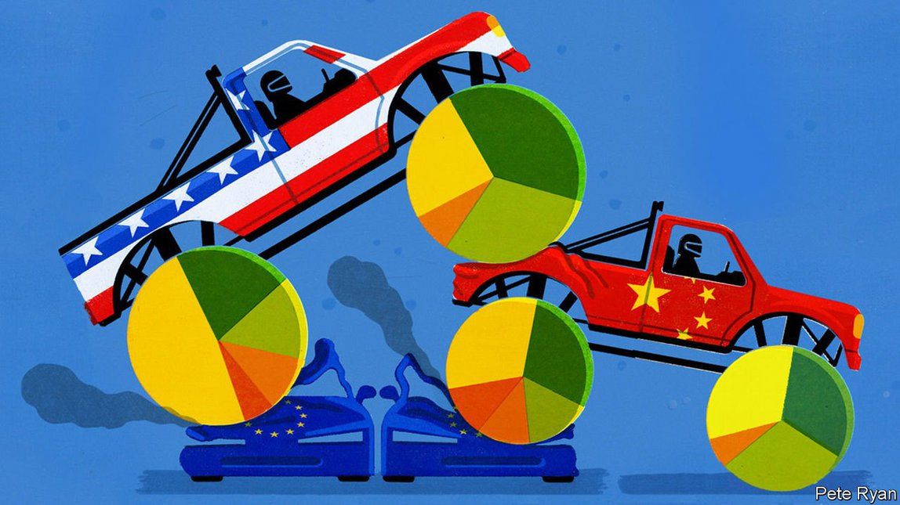

2021-06-13T14:40:42+00:00
【首文】世界经济
全球商业的地缘政治新格局
中国和美国占据了前所未有的支配地位
二十年前的这一周，一家创业公司的股价同比下跌了71%。这家公司的掌门人是一个叫贝索斯的偏执狂。亚马逊的这一濒死体验是互联网泡沫破裂的一部分，这场泡沫暴露了硅谷的狂妄自大，连同安然公司（Enron） 140亿美元的欺诈案一起粉碎了人们对美国企业的信心。同一时间，中国正在痛苦推进把风雨飘摇的国有企业私有化，丝毫看不出它能打造创业文化的迹象。相反，欧洲才是光明希望的所在，新的统一货币有望促成一个有利于商业的庞大的一体化市场。
创造性破坏常常都让预测显得很可笑，但即便考虑到这一点，疫情后的商业世界与人们在20年前可能的预期相比仍可谓天差地别。如今科技公司占到全球股市市值的四分之一，而地域分布已变得极不平衡。美国的优势一路上升，中国也在日益崛起，在全球市值最高的100家公司中这两国占了76家。而欧洲则从2000年的41家下滑到如今的15家。
这种不平衡在很大程度上反映了美国和中国的本事，以及欧洲和其他地区的安于现状。这引出了两个巨大的问号：为何会走到这个局面？它会持续下去吗？
就公司本身而言，大企业并不优于小公司。上世纪80年代日本企业地位飙升，最终却还是一落千丈。大公司可以是成功的标志，也可能是怠惰的象征。沙特阿美石油公司（Aramco）市值2万亿美元，居全球第二，但它不是什么活力的象征，而是更多地体现了这个沙漠王国对化石燃料的危险的依赖。即便如此，恰当的巨型公司仍然反映出一种健康的商业生态——大型、高效的公司在其中诞生，又不断在竞争中被淘汰。这就是提高长期生活水平的秘诀。
要了解美国和中国的支配地位，一个方法是拿它们在全球经济产出中的占比和在商业活动的占比作比较。商业活动占比的定义是一国在全球股市市值、公开融资、风险投资、较大规模的私营创业公司即“独角兽”，以及世界百强公司中的平均占比。按照这个标准，美国贡献了全球GDP的24%，却占到商业活动的48%。中国贡献了全球GDP的18%，商业活动占20%。其他国家的人口占全球的77%，但经济产出和商业活动占比却小得多。
一个解释是欧洲浪费了大好时机。政治干预以及2010至2012年的债务危机阻碍了欧洲大陆的经济一体化进程。欧洲企业大都没能预见到向虚拟经济的转变。欧洲没有出现可匹敌亚马逊或谷歌的创业公司。但是，其他地区的国家同样裹足不前。十年前，巴西、墨西哥和印度摆开架势要打造一大批全球企业，但迄今没什么大突破。
相反，只有美国和中国成功驾驭了创造性破坏的过程。在过去25年里成立、目前市值超过1000亿美元的19家公司中，九家在美国，八家在中国。欧洲一家都没有。而就在苹果和阿里巴巴等成熟的科技巨头力图巩固自己的支配地位之时，Snap、PayPal、美团和拼多多等新一批科技公司也即将达到临界规模。这次疫情在美国和中国激发了创业热情，融资激增。在金融科技和电动汽车等新技术前沿，两国企业已经占据了主导。
成功的秘诀包含了很多要素。广阔的国内市场有助于企业迅速扩大规模。深厚的资本市场、风险投资家网络以及顶尖大学带来了充足的创业公司后备力量。社会上盛行赞美企业家的文化。中国的巨头们宣扬自己的“996”工作理念：每天早上9点到晚上9点，每周工作6天。马斯克睡在特斯拉工厂的车间里。最重要的是，政治环境也支持创造性破坏。相比安稳舒适的欧洲，美国一直更包容颠覆的冲击。2000年之后，中国的统治者对企业家放任自流，并让800万国企工人下岗。
两国的这种支配地位或许不能持续，其中一个原因是上述政治共识在近年已流失。美国人担心国家的衰落，还有低工资和垄断（本刊在2018年估计约四分之一的标普500指数公司应该接受反垄断审查）。本刊支持拜登政府的目标——促进竞争，同时扩大社会安全网，保护工人免受颠覆的伤害。但危险在于美国继续滑向保护主义、产业政策并实施左翼的惩罚性资本税，这会抑制它的商业活力。
在中国，国家主席习近平将大型民营企业视为对党的权力和社会稳定的威胁。对大亨们的打压始于去年，阿里巴巴的联合创始人马云首当其冲，此后波及其他三家大型科技公司的老板。随着共产党官员试图“指导”现有私企来实现政策目标，例如让中国在某些技术上自给自足，他们也更有可能保护这些企业免于直面不受约束的竞争。
美国和中国干预得越多，其他国家就越会担忧全球商业的地域失衡。从理论上讲，逐利的公司来自哪国并不重要：只要它们销售有竞争力的产品并创造就业机会，谁会在乎这一点呢？但如果公司受到本国政府的左右，这里头的计算就不一样了。
随着全球化进程的倒退，跨国公司该在哪里生产疫苗、制定数字规则和纳税的争论已经爆发。欧洲希望成为超级监管者，这可能成为保护主义的遮羞布。其他影响力更弱的国家可能会建立壁垒。为了宣示主权，印度已经对中国社交媒体颁布禁令，并对美国电商公司施加障碍。这是最糟糕的两败俱伤之举，一方面剥夺了国内消费者享受全球创新成果的机会，另一方面又制造了障碍，使本地企业更难扩大规模。
重要的是果实
如果世界上只有两个国家有能力保持大规模的创造性破坏，那将是一场悲剧。但如果它们自己也改弦易辙，而其他国家又甘认失败、竖起路障，结果还会更加糟糕。20年后，全球最大企业的名单是否会与今天截然不同，这才是检验成功的最佳标准。
2021-06-13T14:40:42+00:00
The world economy
The new geopolitics of global business
China and America dominate like never before
TWENTY YEARS ago this week the share price of a startup run by an obsessive called Jeff Bezos had slumped by 71% over 12 months. Amazon’s near-death experience was part of the dotcom crash that exposed Silicon Valley’s hubris and, along with the $14bn fraud at Enron, shattered confidence in American business. China, meanwhile, was struggling to privatise its creaking state-owned firms, and there was little sign that it could create a culture of entrepreneurship. Instead the bright hope was in Europe, where a new single currency promised to catalyse a giant business-friendly integrated market.
Creative destruction often makes predictions look silly, but even by these standards the post-pandemic business world is dramatically different from what you might have expected two decades ago. Tech firms comprise a quarter of the global stockmarket and the geographic mix has become strikingly lopsided. America and, increasingly, China are ascendant, accounting for 76 of the world’s 100 most valuable firms. Europe’s tally has fallen from 41 in 2000 to 15 today.
This imbalance in large part reflects American and Chinese skill, and complacency in Europe and elsewhere. It raises two giant questions: why has it come about? And can it last?
In themselves, big companies are no better than small ones. Japan Inc’s status soared in the 1980s only to collapse. Big firms can be a sign of success but also of sloth. Saudi Aramco, the world’s second-most-valuable firm, is not so much a $2trn symbol of vigour as of a desert kingdom’s dangerous dependency on fossil fuels. Even so, the right sort of giant company is a sign of a healthy business ecology in which big, efficient firms are created and constantly swept away by competition. It is the secret to raising long-run living standards.
One way of capturing the dominance of America and China is to compare their share of world output with their share of business activity (defined as the average of their share of global stockmarket capitalisation, public-offering proceeds, venture-capital funding, “unicorns”—or larger private startups, and the world’s biggest 100 firms). By this yardstick America accounts for 24% of global GDP, but 48% of business activity. China accounts for 18% of GDP, and 20% of business. Other countries, with 77% of the world’s people, punch well below their weight.
Part of the explanation is Europe’s squandered opportunity. Political meddling and the debt crisis in 2010-12 have stalled the continent’s economic integration. Firms there largely failed to anticipate the shift towards the intangible economy. Europe has no startups to rival Amazon or Google. But other countries have struggled, too. A decade ago Brazil, Mexico and India were poised to create a large cohort of global firms. Few have emerged.
Instead, only America and China have been able to marshal the process of creative destruction. Of the 19 firms created in the past 25 years that are now worth over $100bn, nine are in America and eight in China. Europe has none. Even as mature tech giants like Apple and Alibaba try to entrench their dominance, a new set of tech firms including Snap, PayPal, Meituan and Pinduoduo are reaching critical mass. The pandemic has seen a burst of energy in America and China and a boom in fundraising. Firms from the two countries dominate the frontier of new technologies such as fintech and electric cars.
The magic formula has many ingredients. A vast home market helps firms achieve scale quickly. Deep capital markets, networks of venture capitalists and top universities keep the startup pipeline full. There is a culture that exalts entrepreneurs. China’s tycoons boast of their “996” work ethic: 9am to 9pm, six days a week. Elon Musk sleeps on Tesla’s factory floor. Above all politics supports creative destruction. America has long tolerated more disruption than cosy Europe. After 2000, China’s rulers let entrepreneurs run riot and laid off 8m workers at state firms.
The recent erosion of this political consensus in both countries is one reason this dominance could prove unsustainable. Americans are worried about national decline, as well as low wages and monopolies (roughly a quarter of the S&P 500 index merits antitrust scrutiny, we estimated in 2018). The Economist supports the Biden administration’s aim to promote competition and expand the social safety-net to protect workers hurt by disruption. But the danger is that America continues to drift towards protectionism, industrial policy and, on the left, punitive taxes on capital, that dampen its business vim.
In China President Xi Jinping sees big private firms as a threat to the Communist Party’s power and social stability. The cowing of tycoons began last year with Jack Ma, the co-founder of Alibaba, and has since spread to the bosses of three other big tech firms. As party officials seek to “guide” incumbent private firms in order to achieve policy goals, such as national self-sufficiency in some technologies, they are also more likely to protect them from freewheeling competitors.
The more America and China intervene, the more the rest of the world should worry about the lopsided geography of global business. In theory the nationality of profit-seeking firms does not matter: as long as they sell competitive products and create jobs, who cares? But if firms are swayed by governments at home, the calculus changes.
As globalisation unwinds, rows are already erupting over where multinational firms produce vaccines, set digital rules and pay taxes. European hopes of being a regulatory superpower may become a figleaf for protectionism. Others with less clout may erect barriers. To assert its sovereignty, India has banned Chinese social media and hobbled American e-commerce firms. That is the worst of both worlds, depriving local consumers of global innovations and creating barriers that make it even harder for local firms to achieve scale.
It’s the acorns, not the oaks
It would be a tragedy if only two countries in the world proved capable of sustaining a process of creative destruction at scale. But it would be even worse if they turned away from it, and other places admitted defeat and put up barricades. The best gauge of success will be if in 20 years’ time the list of the world’s biggest companies looks absolutely nothing like today’s. ■
2021-06-13T14:40:42+00:00
【首文】世界經濟
全球商業的地緣政治新格局
中國和美國佔據了前所未有的支配地位
二十年前的這一周，一家創業公司的股價同比下跌了71%。這家公司的掌門人是一個叫貝索斯的偏執狂。亞馬遜的這一瀕死體驗是互聯網泡沫破裂的一部分，這場泡沫暴露了硅谷的狂妄自大，連同安然公司（Enron） 140億美元的欺詐案一起粉碎了人們對美國企業的信心。同一時間，中國正在痛苦推進把風雨飄搖的國有企業私有化，絲毫看不出它能打造創業文化的跡象。相反，歐洲才是光明希望的所在，新的統一貨幣有望促成一個有利於商業的龐大的一體化市場。
創造性破壞常常都讓預測顯得很可笑，但即便考慮到這一點，疫情後的商業世界與人們在20年前可能的預期相比仍可謂天差地別。如今科技公司佔到全球股市市值的四分之一，而地域分布已變得極不平衡。美國的優勢一路上升，中國也在日益崛起，在全球市值最高的100家公司中這兩國佔了76家。而歐洲則從2000年的41家下滑到如今的15家。
這種不平衡在很大程度上反映了美國和中國的本事，以及歐洲和其他地區的安於現狀。這引出了兩個巨大的問號：為何會走到這個局面？它會持續下去嗎？
就公司本身而言，大企業並不優於小公司。上世紀80年代日本企業地位飆升，最終卻還是一落千丈。大公司可以是成功的標誌，也可能是怠惰的象徵。沙特阿美石油公司（Aramco）市值2萬億美元，居全球第二，但它不是什麼活力的象徵，而是更多地體現了這個沙漠王國對化石燃料的危險的依賴。即便如此，恰當的巨型公司仍然反映出一種健康的商業生態——大型、高效的公司在其中誕生，又不斷在競爭中被淘汰。這就是提高長期生活水平的秘訣。
要了解美國和中國的支配地位，一個方法是拿它們在全球經濟產出中的佔比和在商業活動的佔比作比較。商業活動佔比的定義是一國在全球股市市值、公開融資、風險投資、較大規模的私營創業公司即“獨角獸”，以及世界百強公司中的平均佔比。按照這個標準，美國貢獻了全球GDP的24%，卻佔到商業活動的48%。中國貢獻了全球GDP的18%，商業活動佔20%。其他國家的人口佔全球的77%，但經濟產出和商業活動佔比卻小得多。
一個解釋是歐洲浪費了大好時機。政治干預以及2010至2012年的債務危機阻礙了歐洲大陸的經濟一體化進程。歐洲企業大都沒能預見到向虛擬經濟的轉變。歐洲沒有出現可匹敵亞馬遜或谷歌的創業公司。但是，其他地區的國家同樣裹足不前。十年前，巴西、墨西哥和印度擺開架勢要打造一大批全球企業，但迄今沒什麼大突破。
相反，只有美國和中國成功駕馭了創造性破壞的過程。在過去25年里成立、目前市值超過1000億美元的19家公司中，九家在美國，八家在中國。歐洲一家都沒有。而就在蘋果和阿里巴巴等成熟的科技巨頭力圖鞏固自己的支配地位之時，Snap、PayPal、美團和拼多多等新一批科技公司也即將達到臨界規模。這次疫情在美國和中國激發了創業熱情，融資激增。在金融科技和電動汽車等新技術前沿，兩國企業已經佔據了主導。
成功的秘訣包含了很多要素。廣闊的國內市場有助於企業迅速擴大規模。深厚的資本市場、風險投資家網絡以及頂尖大學帶來了充足的創業公司後備力量。社會上盛行讚美企業家的文化。中國的巨頭們宣揚自己的“996”工作理念：每天早上9點到晚上9點，每周工作6天。馬斯克睡在特斯拉工廠的車間里。最重要的是，政治環境也支持創造性破壞。相比安穩舒適的歐洲，美國一直更包容顛覆的衝擊。2000年之後，中國的統治者對企業家放任自流，並讓800萬國企工人下崗。
兩國的這種支配地位或許不能持續，其中一個原因是上述政治共識在近年已流失。美國人擔心國家的衰落，還有低工資和壟斷（本刊在2018年估計約四分之一的標普500指數公司應該接受反壟斷審查）。本刊支持拜登政府的目標——促進競爭，同時擴大社會安全網，保護工人免受顛覆的傷害。但危險在於美國繼續滑向保護主義、產業政策並實施左翼的懲罰性資本稅，這會抑制它的商業活力。
在中國，國家主席習近平將大型民營企業視為對黨的權力和社會穩定的威脅。對大亨們的打壓始於去年，阿里巴巴的聯合創始人馬雲首當其衝，此後波及其他三家大型科技公司的老闆。隨着共產黨官員試圖“指導”現有私企來實現政策目標，例如讓中國在某些技術上自給自足，他們也更有可能保護這些企業免於直面不受約束的競爭。
美國和中國干預得越多，其他國家就越會擔憂全球商業的地域失衡。從理論上講，逐利的公司來自哪國並不重要：只要它們銷售有競爭力的產品並創造就業機會，誰會在乎這一點呢？但如果公司受到本國政府的左右，這裡頭的計算就不一樣了。
隨着全球化進程的倒退，跨國公司該在哪裡生產疫苗、制定數字規則和納稅的爭論已經爆發。歐洲希望成為超級監管者，這可能成為保護主義的遮羞布。其他影響力更弱的國家可能會建立壁壘。為了宣示主權，印度已經對中國社交媒體頒布禁令，並對美國電商公司施加障礙。這是最糟糕的兩敗俱傷之舉，一方面剝奪了國內消費者享受全球創新成果的機會，另一方面又製造了障礙，使本地企業更難擴大規模。
重要的是果實
如果世界上只有兩個國家有能力保持大規模的創造性破壞，那將是一場悲劇。但如果它們自己也改弦易轍，而其他國家又甘認失敗、豎起路障，結果還會更加糟糕。20年後，全球最大企業的名單是否會與今天截然不同，這才是檢驗成功的最佳標準。